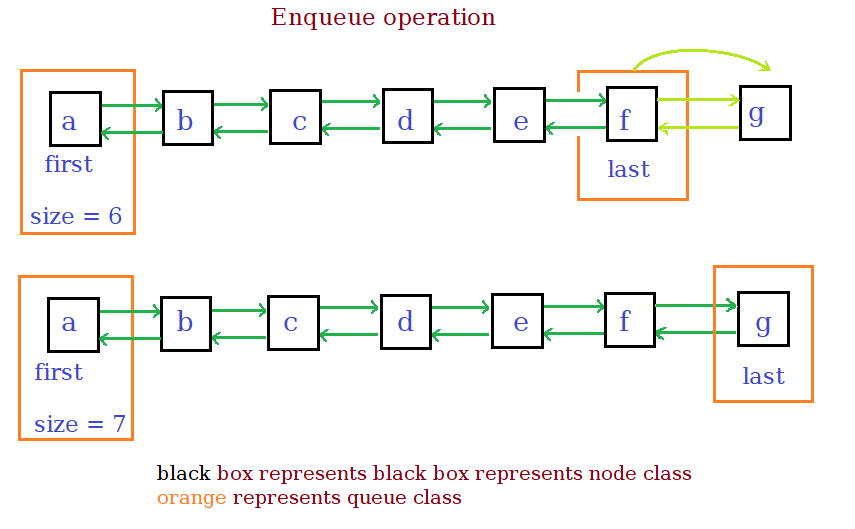
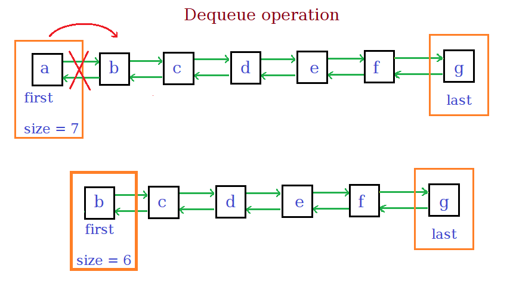

- It is a linear data structure made from chain of node objects.
It is list implementing FIFO order.
- Each node has three attributes data, pointer to the next node, pointer to previous node.
- The queue object has first and last nodes in the queue of the queue and size of the queue.
Important Functions
-
enqueue(data)
Pushes the data at the last node.
- Make node with Data and the next pointer pointing to the last node.
- Make the previous pointer of last as the new node.
- Set the last node of the list as the new node created.
- Increment the size.

-
dequeue()
Returns the data in the first node and removes the first node of the queue.
- Store the first node in a temporary node.
- Set the first node to be the previous of first node.
- Set the next pointer to null.
- Decrement the size, return the temporary node data.

-
getLast()
return the data of the last node.
-
getfirst()
return the data of the first node.
Code